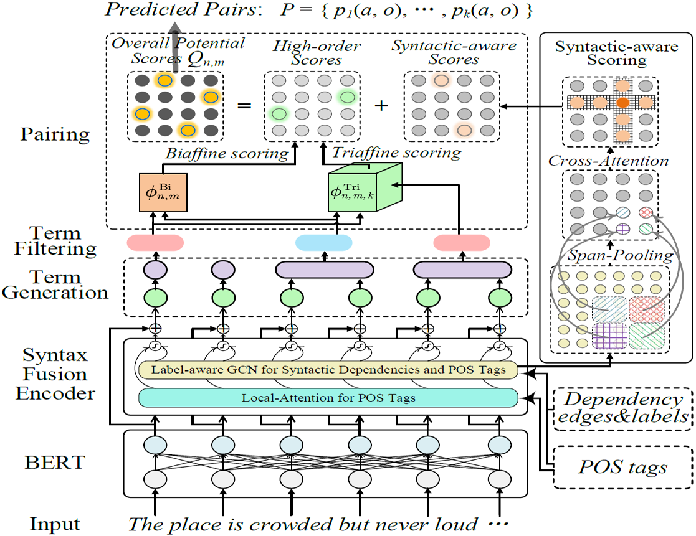
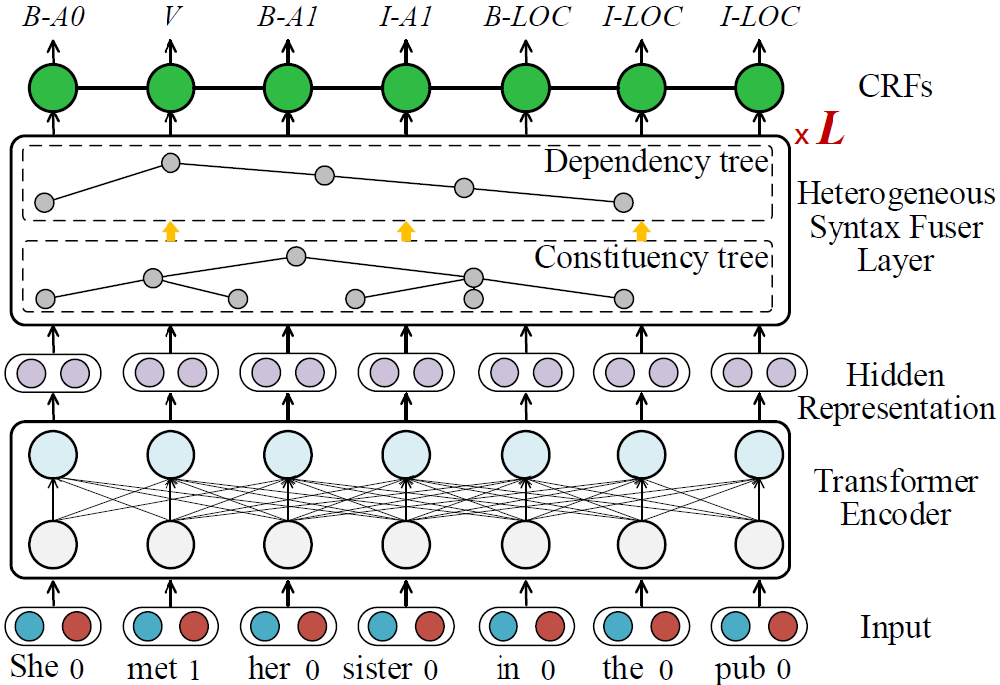
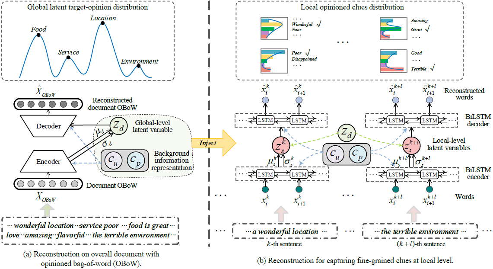
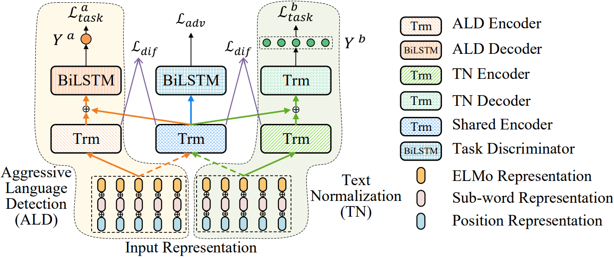

|
I am currently a M.S. student advised by Prof. Donghong Ji in School of Cyber Science and Engineering at Wuhan University(WHU), after I finished my undergraduate study at the School of Computer Science , Wuhan University (WHU). |

|
|

|
I am currently working on syntax-aided NLP, including Affective Computing and partially Parsing. As future research direction, I will continue dedicating my efforts to the structure-aware Affective Computing, but with broader scenarios, such as integrating syntax/semantic structure into text generation, dialogue, etc. |
|  |
Learn from Syntax: Improving Pair-wise Aspect and Opinion Terms Extraction with Rich Syntactic Knowledge
Accepted to the 30th International Joint Conference on Artificial Intelligence (IJCAI) 2021.
Oral Presentation. |
|  |
Better Combine Them Together! Integrating Syntactic Constituency and Dependency Representations for Semantic Role Labeling
Accepted to the 59th Annual Meeting of the Association for Computational Linguistics and the 11th International Joint Conference on Natural Language Processing (ACL-IJCNLP Findings) 2021 .
|
|  |
Latent Target-Opinion as Prior for Document-Level Sentiment Classification: A Variational Approach from Fine-Grained Perspective
Accepted to The Web Conference (WWW) 2021
|
|  |
Aggressive Language Detection with Joint Text Normalization via Adversarial Multi-task Learning
Accepted to CCF International Conference on Natural Language Processing and Chinese Computing (NLPCC) 2020.
Presentation at NLPCC 2020, Zhengzhou, China. |
|


|
Outstanding graduate student award • 2020 • Wuhan University 2st prize of academic scholarship of Wuhan University for graduate • 2020 • Wuhan University Excellent student cadre • 2017 • Wuhan University 2st prize of academic scholarship of Wuhan University for undergraduate • 2016-2019 • Wuhan University National Encouragement Scholarship • 2017 • Wuhan University |
|
Recursive Conditional Random Field Method for Event Recognition. • 2021 • Donghong Ji, Hao Fei, ShengqiongWu. (Chinese Patent, CN202110101327) |